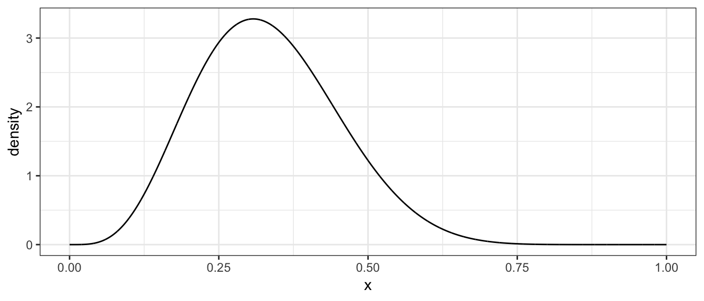
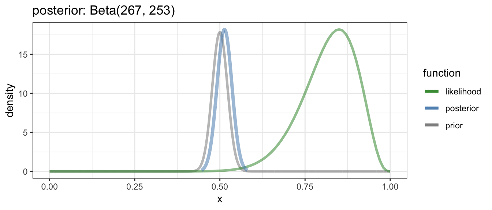
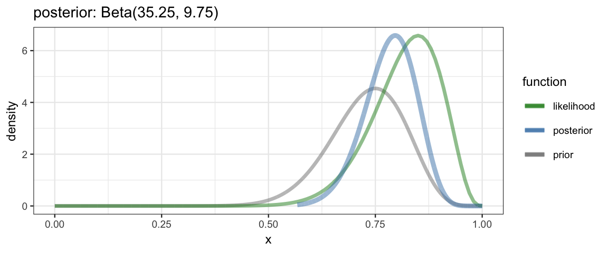
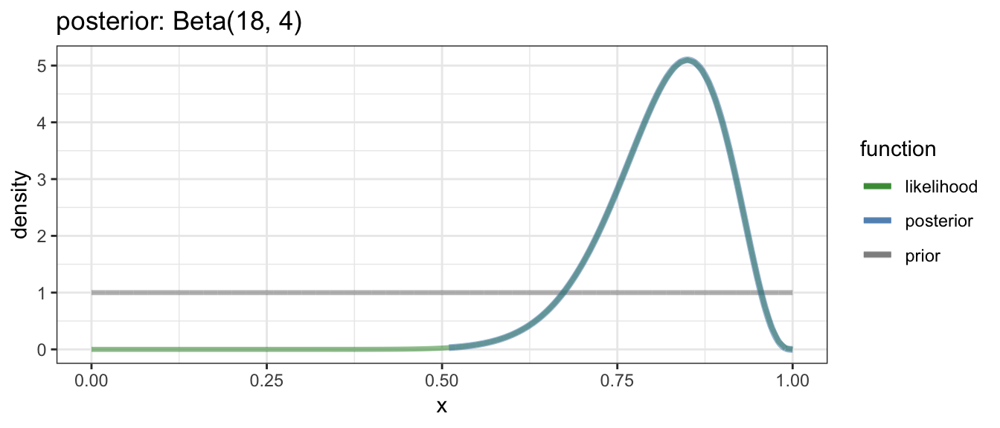
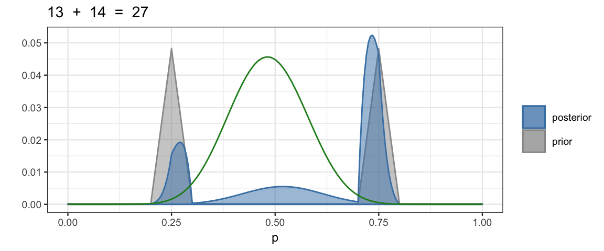

6 Inferring a Binomial Probability via Exact Mathematical Analysis
6.1 Beta distributions
6.1.1 You oughta be in pictures
gf_dist("beta", shape1 = 5, shape2 = 10)
6.1.2 Important facts
You can often look up this sort of information on the Wikipedia page for a family of distributions. If you go to https://en.wikipedia.org/wiki/Beta_distribution you will find, among other things, the following:
| Notation | Beta(α, β) |
| Parameters | α > 0 shape (real) β > 0 shape (real) |
| Support | \(\displaystyle x\in [0,1]\) or \(\displaystyle x\in (0,1)\) |
| \(\displaystyle \frac{x^{\alpha -1}(1-x)^{\beta -1}}{\mathrm{B}(\alpha, \beta )}\) | |
| Mean | \(\displaystyle \frac{\alpha }{\alpha +\beta }\) |
| Mode | \(\displaystyle {\frac{\alpha -1}{\alpha +\beta -2}}\) for \(\alpha, \beta > 1\) 0 for \(\alpha = 1, \beta > 1\) 1 for \(\alpha > 1, \beta = 1\) |
| Variance | \(\displaystyle \frac{\alpha \beta}{(\alpha +\beta )^{2}(\alpha +\beta +1)}\) |
| Concentration | \(\displaystyle \kappa =\alpha +\beta\) |
6.1.3 Alternative Parameterizations
There are several different parameterizations of the beta distributions that can be helpful in selecting a prior or interpreting a posterior.
6.1.3.1 Mode and concentration
Let the concentration be defined as \(\kappa =\alpha +\beta\). Since the mode (\(\omega\)) is \(\displaystyle {\frac{\alpha -1}{\alpha +\beta -2}}\) for \(\alpha, \beta > 1\), we can solve for \(\alpha\) and \(\beta\) to get
\[\begin{align} \alpha &= \omega (\kappa - 2) + 1\\ \beta &= (1-\omega)(\kappa -2) + 1 \end{align}\]
6.1.3.2 Mean and concentration
The beta distribution may also be reparameterized in terms of its mean \(\mu\) and the concentration \(\kappa\). If we solve for \(\alpha\) and \(\beta\), we get
\[\begin{align} \alpha &= \mu \kappa \\ \beta &= (1 - \mu) \kappa \end{align}\]
6.1.3.3 Mean and variance (or standard deviation)
We can also parameterize with the mean \(\mu\) and variance \(\sigma^2\). Solving the system of equations for mean and variance given in the table above, we get
\[\begin{align} \kappa &=\alpha +\beta = \frac{\mu (1-\mu )}{\sigma^2} - 1 \\ \alpha &=\mu \kappa = \mu \left({\frac{\mu (1-\mu )}{\sigma^2}}-1\right) \\ \beta &= (1-\mu )\kappa = (1-\mu ) \left({\frac{\mu (1-\mu)} {\sigma^2}} -1 \right), \end{align}\] provided \(\sigma^2 < \mu (1-\mu)\).
6.1.4 beta_params()
CalvinBayes::beta_params() will compute several summaries of a beta
distribution given any of these 2-parameter summaries. This can be very handy for
converting from one type of information about a beta distribution to another.
For example. Suppose you want a beta distribution with mean 0.3 and standard deviation 0.1. Which beta distribution is it?
library(CalvinBayes)
beta_params(mean = 0.3, sd = 0.1)| shape1 | shape2 | mean | mode | sd | concentration |
|---|---|---|---|---|---|
| 6 | 14 | 0.3 | 0.2778 | 0.1 | 20 |
We can do a similar thing with other combinations.
bind_rows(
beta_params(mean = 0.3, concentration = 10),
beta_params(mode = 0.3, concentration = 10),
beta_params(mean = 0.3, sd = 0.2),
beta_params(shape1 = 5, shape2 = 10),
)| shape1 | shape2 | mean | mode | sd | concentration |
|---|---|---|---|---|---|
| 3.000 | 7.000 | 0.3000 | 0.2500 | 0.1382 | 10.00 |
| 3.400 | 6.600 | 0.3400 | 0.3000 | 0.1428 | 10.00 |
| 1.275 | 2.975 | 0.3000 | 0.1222 | 0.2000 | 4.25 |
| 5.000 | 10.000 | 0.3333 | 0.3077 | 0.1179 | 15.00 |
6.1.5 Automating Bayesian updates for a proportion (beta prior)
Since we have formulas for this case, we can write a function handle any beta prior and any data set very simply. (Much simpler than doing the grid method each time).
quick_bern_beta <-
function(
x, n, # data, successes and trials
a, b, # shape parameters for beta distribution
... # see clever trick below
)
{
if (missing(a) || missing(b)) {
pars <- beta_params(...)
a <- pars$shape1
b <- pars$shape2
}
theta_hat <- x / n # value that makes likelihood largest
posterior_mode <- (a + x - 1) / (a + b + n - 2)
# scale likelihood to be as tall as the posterior
likelihood <- function(theta) {
dbinom(x, n, theta) / dbinom(x, n, theta_hat) *
dbeta(posterior_mode, a + x, b + n - x) # posterior height at mode
}
gf_dist("beta", shape1 = a, shape2 = b,
color = ~ "prior", alpha = 0.5, xlim = c(0,1), size = 1.6) %>%
gf_function(likelihood,
color = ~ "likelihood", alpha = 0.5) %>%
gf_dist("beta", shape1 = a + x, shape2 = b + n - x,
color = ~ "posterior", alpha = 0.5, size = 1.6) %>%
gf_refine(
scale_color_manual(
values = c("prior" = "gray50", "likelihood" = "forestgreen",
"posterior" = "steelblue")))
} With such a function in hand, we can explore examples very quickly. Here are three examples from DBDA2e (pp. 134-135).
quick_bern_beta(17, 20, mode = 0.5, k = 500)
quick_bern_beta(17, 20, mode = 0.75, k = 25)
quick_bern_beta(17, 20, a = 1, b = 1)
6.2 What if the prior isn’t a beta distribution?
Unless it is some other distribution where we can work things out mathematically, we are back to the grid method.
Here’s an example like the one on page 136.
dtwopeaks <- function(x) {
0.48 * triangle::dtriangle(x, 0.2, 0.3) +
0.48 * triangle::dtriangle(x, 0.7, 0.8) +
0.04 * dunif(x)
}
BernGrid(data = c(rep(0, 13), rep(1, 14)), prior = dtwopeaks) %>%
gf_function(function(theta) 0.3 * dbinom(13, 27, theta), color = "forestgreen")
6.3 Exercises
Show that if \(\alpha, \beta > 1\), then the mode of a Beta(\(\alpha\), \(\beta\)) distribution is \(\displaystyle {\frac{\alpha -1}{\alpha +\beta -2}}\).
Hint: What would you do if you were in Calculus I?
Suppose we have a coin that we know comes from a magic-trick store, and therefore we believe that the coin is strongly biased either usually to come up heads or usually to come up tails, but we don’t know which.
Express this belief as a beta prior. That is, find shape parameters that lead to a beta distribution that corresponds to this belief.
Now we flip the coin 5 times and it comes up heads in 4 of the 5 flips. What is the posterior distribution?
Use
quick_bern_beta()or a similar function of your own creation to show the prior and posterior graphically.
Suppose a state-wide election is approaching, and you are interested in knowing whether the general population prefers the democrat or the republican. There is a just-published poll in the newspaper, which states that of 100 randomly sampled people, 58 preferred the republican and the remainder preferred the democrat.
Suppose that before the newspaper poll, your prior belief was a uniform distribution. What is the 95% HDI on your beliefs after learning of the newspaper poll results?
Based on what you know about elections, why is a uniform prior not a great choice? Repeat part (a) with a prior the conforms better to what you know about elections. How much does the change of prior affect the 95% HDI?
You find another poll conducted by a different new organization In this second poll, 56 of 100 people preferred the republican. Assuming that peoples’ opinions have not changed between polls, what is the 95% HDI on the posterior taking both polls into account. Make it clear which prior you are using.
Based on this data (and your choice of prior, and assuming public opinion doesn’t change between the time of the polls and election day), what is the probability that the republican will win the election.